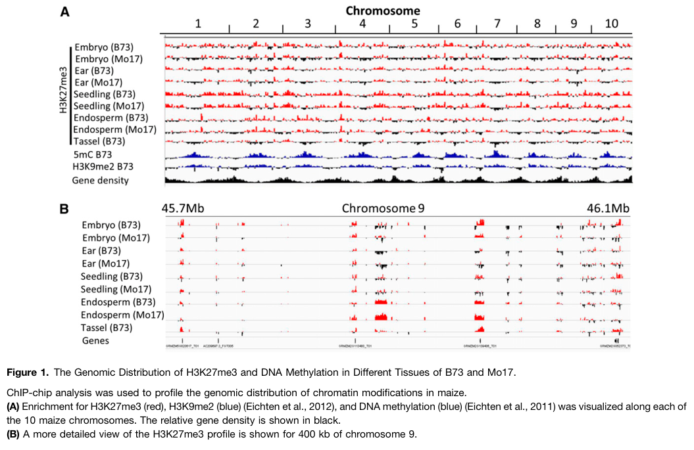

Maize EZ1 (Q8S4P6), also known as MEZ1 (Maize Enhancer-of-zeste 1), is an Enhancer-of-zeste [E(z)]-class SET-domain histone-lysine N-methyltransferase (EC 2.1.1.356) and the catalytic-subunit candidate of plant Polycomb Repressive Complex 2 (PRC2). It is one of three maize E(z)-like genes (Mez1/Mez2/Mez3); phylogenetically Mez1 is the maize CLF-like (CURLY LEAF-like) homolog, whereas Mez2/Mez3 are EZA1/SWN-like (SWINGER-like) (Springer et al. 2002, doi:10.1104/pp.010742). The UniProt FUNCTION statement describes it as a Polycomb group protein and "Catalytic subunit of some PcG multiprotein complex, which methylates 'Lys-27' of histone H3, leading to transcriptional repression of the affected target genes". The enzyme uses S-adenosyl-L-methionine to transfer methyl groups onto Lys-27 of histone H3 (H3K27me1/2/3), establishing a repressive chromatin state (facultative heterochromatin) at target loci; in plants PRC2 is defined by this H3K27 methylation activity. The protein carries the canonical E(z)-family architecture (EZD1/EZD2, SANT, a Cys-rich CXC region, and the C-terminal SET domain "predicted to be involved in protein methylation") and acts in the nucleus on chromatin within PRC2-like assemblies that include maize homologs of FIE/MSI1/SU(Z)12-like proteins. As part of plant PRC2, MEZ1 functions in epigenetic gene silencing and developmental regulation (flowering, photoperiod response) and is notable as the only one of the three maize E(z) homologs that is imprinted, consistent with the strong association of maize H3K27me3 with imprinted (paternally expressed) genes in endosperm. Direct maize loss-of-function genetics exist for Mez2/Mez3 (whose mutants reduce H3K27me3 at a subset of loci, implying partial redundancy); a Mez1-specific knockout and in vitro biochemistry on the maize protein itself were not available in the retrieved literature, so the catalytic and complex-membership annotations rest on strong sequence/domain, phylogenetic, and orthology evidence plus the conserved plant PRC2 mechanism.
| GO Term | Evidence | Action | Reason |
|---|---|---|---|
|
GO:0032259
methylation
|
IEA
GO_REF:0000043 |
MARK AS OVER ANNOTATED |
Summary: SPKW (GO_REF:0000043) annotation derived from the UniProt keyword "Methyltransferase"/"Transferase"; snapshot-only, removed in the current GOA release. EZ1/MEZ1 is genuinely a methyltransferase, but "methylation" is the generic process term that drops the substrate: the enzyme specifically performs histone H3 Lys-27 methylation.
Reason: GOA's removal of this annotation was JUSTIFIED. The keyword-derived term "methylation" (GO:0032259) is the high-level parent process that simply states a methyl group is transferred, dropping all substrate specificity. EZ1/MEZ1 is an E(z)-class enzyme whose UniProt FUNCTION explicitly states it "methylates 'Lys-27' of histone H3", i.e. it performs substrate-specific histone H3K27 methylation as a SAM-dependent histone lysine methyltransferase acting on H3K27. The substrate specificity is already captured by the molecular-function terms retained in current GOA - "histone H3K27 methyltransferase activity" (GO:0046976) and "histone H3K27 trimethyltransferase activity" (GO:0140951) - and the biological role is captured by "heterochromatin formation" (GO:0031507) and "negative regulation of gene expression, epigenetic" (GO:0045814). The bare "methylation" process term therefore adds no information once these specific annotations are present. It cannot be usefully MODIFIED to a specific histone-methylation process term either, because the candidate substrate-specific process terms in GO ("histone H3-K27 methylation" GO:0070734 and "histone methylation" GO:0016571) are now obsolete - GO carries the substrate specificity on the molecular-function branch rather than as a dedicated process. Removal of the redundant generic keyword-derived term is appropriate (over-annotation).
Supporting Evidence:
file:MAIZE/EZ1/EZ1-deep-research-falcon.md
its expected enzymatic role is to use S-adenosylmethionine (SAM) to methylate **histone H3 Lys-27**, producing H3K27me3 on chromatin within PRC2
file:MAIZE/EZ1/EZ1-deep-research-falcon.md
PRC2 catalyzes **H3K27 trimethylation (H3K27me3)**
|
|
GO:0003682
chromatin binding
|
IBA
GO_REF:0000033 |
ACCEPT |
Summary: IBA annotation propagated across the E(z)/EZH phylogenetic group. As a PRC2 catalytic subunit, EZ1/MEZ1 associates with chromatin (nucleosomes) to deposit H3K27 methylation.
Reason: Appropriate and well supported by conserved biology. PRC2 is a chromatin-associated nuclear complex that deposits histone methylation on nucleosomes at genomic loci, so chromatin binding is a genuine, conserved molecular activity of the E(z)/EZH family. The IBA term is at the right level of specificity and consistent with the EZ1 SANT and CXC chromatin-engaging modules described for the maize MEZ proteins.
Supporting Evidence:
file:MAIZE/EZ1/EZ1-deep-research-falcon.md
PRC2-dependent deposition of H3K27me3 is a chromatin-associated nuclear process
file:MAIZE/EZ1/EZ1-deep-research-falcon.md
PRC2 complex subunits are required for nucleosome association of PRC2
|
|
GO:0031507
heterochromatin formation
|
IBA
GO_REF:0000033 |
ACCEPT |
Summary: IBA annotation: the E(z)/PRC2 family establishes repressive (facultative heterochromatin) chromatin states via H3K27me3. This is a core biological process of EZ1/MEZ1.
Reason: Core function, strongly supported by conserved plant PRC2 biology and maize-specific epigenomics. Plant PRC2 deposits H3K27 methylation that establishes a repressive chromatin state at target loci, and maize H3K27me3 marks define facultative heterochromatin and are attributed to the E(z)/PRC2 pathway. The IBA term is at an appropriate level of specificity for an E(z)-class catalytic subunit.
Supporting Evidence:
file:MAIZE/EZ1/EZ1-deep-research-falcon.md
Genomic distribution of maize facultative heterochromatin marked by trimethylation of H3K27
file:MAIZE/EZ1/EZ1-deep-research-falcon.md
Maize H3K27me3 is tissue-variable and enriched in gene-dense chromosome arms
|
|
GO:0005634
nucleus
|
IEA
GO_REF:0000120 |
ACCEPT |
Summary: IEA annotation for nuclear localization, consistent with the UniProt subcellular location ("Nucleus") and with PRC2 being a chromatin-associated nuclear complex.
Reason: Correct and well supported. The UniProt entry assigns subcellular location "Nucleus", and PRC2 is inherently a chromatin-associated nuclear complex because it deposits histone methylation on nucleosomes; genome-wide analyses report that most PRC2 proteins localize to the nucleus. Although maize-specific localization microscopy for MEZ1 was not retrieved, the conservative inference is strong.
Supporting Evidence:
file:MAIZE/EZ1/EZ1-deep-research-falcon.md
most PRC2 core proteins localize to the **nucleus** and physically interact to form multi-subunit complexes
file:MAIZE/EZ1/EZ1-deep-research-falcon.md
maize PRC2 core subunits (including E(z)/MEZ family proteins) are nuclear/chromatin-associated
|
|
GO:0006338
chromatin remodeling
|
IEA
GO_REF:0000002 |
MODIFY |
Summary: IEA annotation from InterPro (IPR045318, EZH1/2-like). "Chromatin remodeling" is an imprecise process term for a histone methyltransferase whose action is covalent H3K27 methylation, not ATP-dependent nucleosome repositioning.
Reason: The essence (EZ1 alters chromatin state) is correct, but "chromatin remodeling" (GO:0006338) conventionally denotes dynamic, often ATP-dependent reorganization of nucleosome structure, whereas EZ1/MEZ1 acts by depositing a covalent histone mark (H3K27 methylation) to establish a repressive chromatin state. The biology is more precisely captured by "heterochromatin formation" (GO:0031507), which is the established process for E(z)/PRC2-mediated H3K27me3 silencing and is already present via the IBA annotation. Modify to the more specific and accurate process term.
Proposed replacements:
heterochromatin formation
Supporting Evidence:
file:MAIZE/EZ1/EZ1-deep-research-falcon.md
PRC2 catalyzes **H3K27 trimethylation (H3K27me3)**
file:MAIZE/EZ1/EZ1-deep-research-falcon.md
Genomic distribution of maize facultative heterochromatin marked by trimethylation of H3K27
|
|
GO:0031519
PcG protein complex
|
IEA
GO_REF:0000120 |
ACCEPT |
Summary: IEA annotation: EZ1/MEZ1 is part of a Polycomb group (PcG) protein complex (PRC2). This is a core cellular-component annotation for an E(z)-class catalytic subunit.
Reason: Correct and core. The UniProt FUNCTION states EZ1 is a Polycomb group protein and the catalytic subunit of "some PcG multiprotein complex"; plant E(z)-class proteins function within PRC2-like assemblies that include FIE/MSI1/SU(Z)12-like subunits. In maize, EZ1/MEZ1 is most plausibly functional as part of PRC2-like complexes. The term is at an appropriate level of specificity for complex membership.
Supporting Evidence:
file:MAIZE/EZ1/EZ1-deep-research-falcon.md
**ZmMEZ1** is highly expressed together with **ZmFie1, ZmEmf2b, ZmMSI1c**, supporting participation in a grain-filling PRC2 complex
PMID:11950982
Polycomb group (PcG) proteins play an important role in developmental and
|
|
GO:0042054
histone methyltransferase activity
|
IEA
GO_REF:0000002 |
MODIFY |
Summary: IEA annotation from InterPro (IPR045318, EZH1/2-like). EZ1/MEZ1 is a histone methyltransferase, but the substrate-specific child term "histone H3K27 methyltransferase activity" (GO:0046976) is more informative and is already present.
Reason: The annotation is correct but too general. EZ1/MEZ1 is an E(z)-class enzyme that specifically methylates Lys-27 of histone H3; the deep research concludes it is a SAM-dependent histone lysine methyltransferase acting on H3K27, consistent with its EC assignment in UniProt (EC 2.1.1.356) and its E(z)-class SET domain conservation. The generic "histone methyltransferase activity" should be modified to the substrate-specific "histone H3K27 methyltransferase activity" (GO:0046976), which is already annotated (IBA/IEA) and captures the true catalytic specificity.
Proposed replacements:
histone H3K27 methyltransferase activity
Supporting Evidence:
file:MAIZE/EZ1/EZ1-deep-research-falcon.md
its expected enzymatic role is to use S-adenosylmethionine (SAM) to methylate **histone H3 Lys-27**, producing H3K27me3 on chromatin within PRC2
file:MAIZE/EZ1/EZ1-deep-research-falcon.md
E(z)-family SET-domain proteins (e.g., **CLF/SWN/MEA** in Arabidopsis) as the catalytic subunits responsible for depositing H3K27me3
|
|
GO:0140951
histone H3K27 trimethyltransferase activity
|
IEA
GO_REF:0000120 |
ACCEPT |
Summary: IEA annotation transferred from EC 2.1.1.356 (UniProtKB-EC). This is the most specific molecular-function term and matches the UniProt catalytic activity (formation of H3K27me3).
Reason: Correct and maximally specific. The UniProt CATALYTIC ACTIVITY record assigns EC 2.1.1.356 (L-lysyl(27)-[histone H3] + 3 SAM -> trimethyl-L-lysyl(27)-[histone H3]), i.e. histone H3K27 trimethyltransferase activity, and the deep research confirms EZ1 is a SAM-dependent histone lysine methyltransferase acting on H3K27 consistent with its EC assignment in UniProt. This is a core molecular function; accept as-is.
Supporting Evidence:
file:MAIZE/EZ1/EZ1-deep-research-falcon.md
PRC2 catalyzes **H3K27 trimethylation (H3K27me3)**
file:MAIZE/EZ1/EZ1-deep-research-falcon.md
its expected enzymatic role is to use S-adenosylmethionine (SAM) to methylate **histone H3 Lys-27**, producing H3K27me3 on chromatin within PRC2
|
|
GO:0001222
transcription corepressor binding
|
IEA
GO_REF:0000107 |
MARK AS OVER ANNOTATED |
Summary: IEA annotation transferred from the Arabidopsis ortholog (AT2G23380 = SWN, P93831) by Ensembl Compara. "Transcription corepressor binding" is a non-specific protein-binding term with no maize-specific support and is not part of the gene's core methyltransferase function.
Reason: This is an orthology-transferred protein-binding annotation lacking gene-specific support in maize. The retrieved literature does not identify a specific corepressor partner of EZ1/MEZ1; the gene's well-supported molecular function is its E(z)-class H3K27 methyltransferase activity within PRC2. "Protein binding"-type terms that do not identify an informative interaction partner are discouraged and add little once the catalytic MF and PcG-complex membership are annotated. Treat as an over-annotation pending direct interaction evidence.
Supporting Evidence:
file:MAIZE/EZ1/EZ1-deep-research-falcon.md
E(z)-family SET-domain proteins (e.g., **CLF/SWN/MEA** in Arabidopsis) as the catalytic subunits responsible for depositing H3K27me3
|
|
GO:0003727
single-stranded RNA binding
|
IEA
GO_REF:0000107 |
REMOVE |
Summary: IEA annotation transferred from the Arabidopsis ortholog (AT2G23380 = SWN) by Ensembl Compara. There is no maize-specific evidence that EZ1/MEZ1 binds single-stranded RNA, and this is not part of its supported function.
Reason: Unsupported orthology transfer. While PRC2 RNA association has been reported in some systems, it is mechanistically contested and there is no maize-specific evidence that EZ1/MEZ1 binds single-stranded RNA. The retrieved literature characterizes EZ1/MEZ1 strictly as a chromatin-associated, nuclear E(z)-class histone methyltransferase acting on H3K27; no RNA-binding assay supports this term for the maize protein. A speculative, ortholog-transferred ssRNA-binding MF that is not part of the gene's demonstrated function should be removed.
Supporting Evidence:
file:MAIZE/EZ1/EZ1-deep-research-falcon.md
PRC2-dependent deposition of H3K27me3 is a chromatin-associated nuclear process
|
|
GO:0005677
chromatin silencing complex
|
IEA
GO_REF:0000107 |
ACCEPT |
Summary: IEA annotation (Ensembl ortholog transfer; also present via EnsemblPlants in the UniProt record). EZ1/MEZ1 is part of a PRC2 chromatin-silencing complex that establishes repressive H3K27me3 chromatin.
Reason: Consistent with the gene's role. Plant PRC2 is a chromatin-silencing complex that deposits H3K27 methylation to establish a repressive chromatin state at target loci, mediating transcriptional repression; EZ1/MEZ1 is the catalytic subunit of such a PcG complex per UniProt. This complex-membership term is appropriate and overlaps with the PcG protein complex annotation.
Supporting Evidence:
file:MAIZE/EZ1/EZ1-deep-research-falcon.md
classification into the four core groups (E(z), Su(z)12, ESC, p55/MSI), nuclear localization of components
PMID:11950982
these genes likely play a conserved role in repressing gene expression
|
|
GO:0006355
regulation of DNA-templated transcription
|
IEA
GO_REF:0000107 |
MODIFY |
Summary: IEA annotation (Ensembl ortholog transfer). EZ1/MEZ1 regulates transcription, but this is a very generic process term; its action is specifically epigenetic transcriptional repression.
Reason: The essence is correct (EZ1 affects transcription) but the term is overly general. EZ1/MEZ1 acts by depositing repressive H3K27 methylation leading to transcriptional repression of target genes (UniProt FUNCTION), i.e. it mediates epigenetic negative regulation of gene expression. The more specific and informative term "negative regulation of gene expression, epigenetic" (GO:0045814) - which is already present as a separate IEA annotation - better captures this directional, mechanism- specific role. Modify the generic transcription-regulation term to the epigenetic negative-regulation term.
Proposed replacements:
negative regulation of gene expression, epigenetic
Supporting Evidence:
PMID:11950982
these genes likely play a conserved role in repressing gene expression
file:MAIZE/EZ1/EZ1-deep-research-falcon.md
PRC2-mediated H3K27me3 participates in **allele-specific repression** and imprinting behavior in maize endosperm
|
|
GO:0009909
regulation of flower development
|
IEA
GO_REF:0000107 |
KEEP AS NON CORE |
Summary: IEA annotation transferred from the Arabidopsis ortholog (SWN/CLF) by Ensembl Compara. In Arabidopsis, E(z)/PRC2 represses floral regulators via H3K27me3; this is a pleiotropic developmental role rather than the core molecular function.
Reason: Plausible by orthology and consistent with the well-known role of Arabidopsis E(z) homologs (CLF/SWN) in repressing flowering-pathway genes via H3K27me3, but it is a downstream, pleiotropic developmental consequence of PRC2 silencing rather than the gene's core biochemical function. No maize-specific flower-development phenotype was retrieved for MEZ1. Retain as a non-core developmental process.
Supporting Evidence:
file:MAIZE/EZ1/EZ1-deep-research-falcon.md
braA.clf-1 mutants have reduced H3K27me3 at flowering integrator loci (FT, SOC1, SEP3 homologs) with increased transcript levels and accelerated flowering
|
|
GO:0031507
heterochromatin formation
|
IEA
GO_REF:0000107 |
ACCEPT |
Summary: IEA annotation (Ensembl ortholog transfer); duplicates the IBA annotation to the same term. Heterochromatin (facultative, H3K27me3) formation is a core process for the E(z)/PRC2 family.
Reason: Correct and consistent with the IBA annotation to the same term. Plant PRC2 deposits H3K27me3 to establish facultative heterochromatin, and maize H3K27me3 marks define facultative heterochromatin attributed to the E(z)/PRC2 pathway. Duplicate annotations with different evidence codes are acceptable; this IEA provides additional computational support for a core process.
Supporting Evidence:
file:MAIZE/EZ1/EZ1-deep-research-falcon.md
Genomic distribution of maize facultative heterochromatin marked by trimethylation of H3K27
file:MAIZE/EZ1/EZ1-deep-research-falcon.md
PRC2 catalyzes **H3K27 trimethylation (H3K27me3)**
|
|
GO:0045814
negative regulation of gene expression, epigenetic
|
IEA
GO_REF:0000107 |
ACCEPT |
Summary: IEA annotation (Ensembl ortholog transfer). EZ1/MEZ1 mediates epigenetic gene silencing through H3K27 methylation. This accurately captures the directional, mechanism-specific biological role of PRC2.
Reason: Accurate and informative. EZ1/MEZ1 deposits repressive H3K27 methylation leading to transcriptional repression of target genes (UniProt FUNCTION) and is a PRC2 catalytic subunit; PRC2 is the canonical machinery for epigenetic negative regulation of gene expression in plants. The term correctly captures the gene's directional repressive role and is preferable to the generic "regulation of DNA-templated transcription".
Supporting Evidence:
file:MAIZE/EZ1/EZ1-deep-research-falcon.md
PRC2-mediated H3K27me3 participates in **allele-specific repression** and imprinting behavior in maize endosperm
PMID:11950982
these genes likely play a conserved role in repressing gene expression
|
|
GO:0046976
histone H3K27 methyltransferase activity
|
IEA
GO_REF:0000107 |
ACCEPT |
Summary: IEA annotation (Ensembl ortholog transfer). This is the substrate-specific molecular function of EZ1/MEZ1 and a core annotation.
Reason: Core molecular function, correctly specified. EZ1/MEZ1 is an E(z)-class enzyme that methylates Lys-27 of histone H3 (UniProt FUNCTION) and is a SAM-dependent histone lysine methyltransferase acting on H3K27 consistent with its EC assignment in UniProt and its E(z)-class SET domain conservation. This is the central activity of the gene product; accept. (The narrower trimethyltransferase term GO:0140951 is also present and likewise accepted.)
Supporting Evidence:
file:MAIZE/EZ1/EZ1-deep-research-falcon.md
its expected enzymatic role is to use S-adenosylmethionine (SAM) to methylate **histone H3 Lys-27**, producing H3K27me3 on chromatin within PRC2
file:MAIZE/EZ1/EZ1-deep-research-falcon.md
E(z)-family SET-domain proteins (e.g., **CLF/SWN/MEA** in Arabidopsis) as the catalytic subunits responsible for depositing H3K27me3
|
|
GO:0048586
regulation of long-day photoperiodism, flowering
|
IEA
GO_REF:0000107 |
KEEP AS NON CORE |
Summary: IEA annotation transferred from the Arabidopsis ortholog by Ensembl Compara (also reflected in the UniProt EnsemblPlants GO line). A pleiotropic, photoperiod-dependent developmental role inferred from orthology, not the core function.
Reason: A plausible orthology-based developmental role: Arabidopsis E(z)/PRC2 represses flowering-time regulators (e.g. FLC/FT module) via H3K27me3, and photoperiod-dependent flowering is one downstream output. This is a pleiotropic, indirect developmental consequence of PRC2-mediated silencing rather than the gene's core biochemical function, and no maize-specific photoperiod phenotype was retrieved for MEZ1. Retain as non-core.
Supporting Evidence:
file:MAIZE/EZ1/EZ1-deep-research-falcon.md
CLF as a “major H3K27 methyltransferase regulating flowering time”
file:MAIZE/EZ1/EZ1-deep-research-falcon.md
braA.clf-1 mutants have reduced H3K27me3 at flowering integrator loci (FT, SOC1, SEP3 homologs) with increased transcript levels and accelerated flowering
|
Q: Does purified maize MEZ1 (EZ1) have intrinsic H3K27 methyltransferase activity in a reconstituted maize PRC2, and what is its product specificity (mono/di/tri-methyl) at H3K27?
Suggested experts: Nathan M. Springer
Q: What is the division of labor between the three maize E(z) homologs (Mez1/clf-like vs Mez2/Mez3/SWN-like) in establishing H3K27me3 at distinct genomic loci, and is Mez1 uniquely required at imprinted/endosperm loci given that it is the only imprinted homolog?
Suggested experts: Nathan M. Springer, Irina Makarevitch
Experiment: Generate maize mez1 (single) and mez1 mez2 mez3 (higher-order) loss-of-function alleles and profile genome-wide H3K27me3 by ChIP-seq across tissues (including endosperm) with matched RNA-seq, to define Mez1-dependent H3K27me3 domains and de-repressed target genes.
Hypothesis: Mez1 (the clf-like homolog) contributes non-redundantly to a subset of H3K27me3 domains not covered by Mez2/Mez3, including imprinted loci in endosperm.
Type: loss-of-function genetics with ChIP-seq/RNA-seq
Experiment: Reconstitute a maize PRC2 from recombinant MEZ1 plus maize FIE/MSI1/SU(Z)12-like subunits and assay SAM-dependent methyltransferase activity on recombinant nucleosomes, measuring methylation state at H3K27 by quantitative mass spectrometry.
Hypothesis: MEZ1 is catalytically active as an H3K27 methyltransferase only (or much more efficiently) within an assembled PRC2 complex, consistent with the conserved requirement of non-catalytic PRC2 subunits for activity.
Type: in vitro reconstituted histone methyltransferase assay
Experiment: Test MEZ1 substrate and residue specificity using SET-domain catalytic point mutants and a panel of histone H3 peptides/nucleosomes carrying K27 versus other lysine substrates, quantifying product methylation states.
Hypothesis: The conserved E(z) SET domain of MEZ1 confers strict H3K27 specificity, and catalytic-site mutations abolish methyltransferase activity without affecting PRC2 assembly.
Type: structure-function mutagenesis and enzyme specificity assay
The research report should be a detailed narrative explaining the function, biological processes, and localization of the gene product. Citations should be given for all claims.
You should prioritize authoritative reviews and primary scientific literature when conducting research. You can supplement
this with annotations you find in gene/protein databases, but these can be outdated or inaccurate.
We are specifically interested in the primary function of the gene - for enzymes, what reaction is catalyzed, and what is the substrate specificity? For transporters, what is the substrate? For structural proteins or adapters, what is the broader structural role? For signaling molecules, what is the role in the pathway.
We are interested in where in or outside the cell the gene product carries out its function.
We are also interested in the signaling or biochemical pathways in which the gene functions. We are less interested in broad pleiotropic effects, except where these elucidate the precise role.
Include evidence where possible. We are interested in both experimental evidence as well as inference from structure, evolution, or bioinformatic analysis. Precise studies should be prioritized over high-throughput, where available.
The UniProt accession Q8S4P6 is specified as Histone-lysine N-methyltransferase EZ1 (Enhancer of zeste protein 1) from Zea mays. In maize primary literature, the canonical nomenclature for Enhancer-of-zeste homologs is Mez1/Mez2/Mez3 (Maize enhancer of zeste), where Mez1 corresponds to EZ1/MEZ1 (the imprinted E(z) homolog most similar to Arabidopsis CLF). The maize genome is explicitly stated to encode three E(z) homologs (Mez1, Mez2, Mez3). (makarevitch2013genomicdistributionof pages 2-3)
Trimethylation of histone H3 at lysine 27 (H3K27me3) is a repressive chromatin modification associated with transcriptional repression and developmental regulation in plants. In the conserved Polycomb system, a subset of Polycomb group proteins forms PRC2, which catalyzes methylation at H3K27. (makarevitch2013genomicdistributionof pages 1-2, makarevitch2013genomicdistributionof pages 2-3)
In plants, the E(z)-group subunits are the histone methyltransferases of PRC2. Crop and model-plant literature consistently identifies E(z)-family SET-domain proteins (e.g., CLF/SWN/MEA in Arabidopsis) as the catalytic subunits responsible for depositing H3K27me3. (nugroho2023transcriptomicandepigenomic pages 1-2, pozaviejo2024brassicarapacurly pages 1-2)
In maize, Mez1/EZ1 is one of the three E(z) homologs (Mez1/Mez2/Mez3) that are the best-supported candidates to supply PRC2 catalytic activity for H3K27me3 deposition. Mez1 is distinctive in that it is imprinted and closely related to Arabidopsis CLF, whereas Mez2/Mez3 are highly similar paralogs related to SWN/MEA-like lineages. (makarevitch2013genomicdistributionof pages 2-3)
Most direct maize-specific statement available in retrieved full texts: PRC2 catalyzes H3K27 trimethylation (H3K27me3). (makarevitch2013genomicdistributionof pages 1-2)
Inference to EZ1/MEZ1 specifically in maize: Since Mez1 is an E(z)-family PRC2 catalytic homolog (by phylogeny and family assignment within maize E(z) genes), its expected enzymatic role is to use S-adenosylmethionine (SAM) to methylate histone H3 Lys-27, producing H3K27me3 on chromatin within PRC2. This is strongly supported at the family/complex level in plants and by maize genetic/epigenomic evidence that E(z) homolog mutations alter H3K27me3 at defined loci (shown for Mez2/Mez3; Mez1 mutants were not recovered in the 2013 study). (makarevitch2013genomicdistributionof pages 5-7, makarevitch2013genomicdistributionof pages 7-9, makarevitch2013genomicdistributionof pages 1-2)
Important limitation: The retrieved maize texts do not provide residue-level catalytic mechanisms, methylation-state preferences beyond trimethylation (me1/me2 vs me3), or explicit biochemical assays on purified ZmMEZ1; thus, substrate-state specificity cannot be stated from the retrieved corpus and should be treated as not directly evidenced here. (makarevitch2013genomicdistributionof pages 10-11, makarevitch2013genomicdistributionof pages 7-9)
A maize endosperm study profiling H3K27me3 dynamics during grain filling reports that multiple PRC2 components are highly expressed around the onset of grain filling (En6D–En10D) including ZmFie1, ZmEmf2b, ZmMSI1c, and ZmMEZ1; the authors interpret this as evidence that a ZmFie1-mediated PRC2 is a primary regulator during this window. (wang2025thefie1prc2complex pages 3-4)
This places ZmMEZ1 (EZ1) in a cereal endosperm PRC2 module during a developmentally and agronomically important transition. (wang2025thefie1prc2complex pages 3-4)
A strong and quantitative maize finding is the association between H3K27me3 and imprinting in endosperm: nearly all maize paternally expressed genes (PEGs) examined (41/46) show H3K27me3 enrichment in endosperm, and in tested cases the mark is restricted to the silent maternal allele. This supports a pathway in which PRC2-mediated H3K27me3 participates in allele-specific repression and imprinting behavior in maize endosperm. (makarevitch2013genomicdistributionof pages 10-11, makarevitch2013genomicdistributionof pages 5-7)
Mez1 is explicitly described as the imprinted maize E(z) homolog, suggesting (by association) that Mez1/EZ1 is a plausible contributor to endosperm-specific Polycomb regulation (although direct Mez1 loss-of-function genetics were not available in the retrieved maize study). (makarevitch2013genomicdistributionof pages 10-11, makarevitch2013genomicdistributionof pages 2-3)
Maize H3K27me3 is tissue-variable and enriched in gene-dense chromosome arms; endosperm is notably distinct in its set of marked genes. (makarevitch2013genomicdistributionof pages 2-3)
A key mechanistic result from maize genetics is that Mez2/Mez3 mutations reduce H3K27me3 at a subset of genomic loci. In seedlings, a genome-wide ChIP-chip analysis detected 4374 H3K27me3-enriched segments in B73; 742 (17%) were classified as Mez2/3-dependent (with segment categories showing differential dependence on mez2 vs mez3 vs double mutants). (makarevitch2013genomicdistributionof pages 7-9)
The table/figure evidence for these segment counts and dependence classes is shown directly in the paper’s tabulated/figure materials. (makarevitch2013genomicdistributionof media 76c36c18)
Despite these molecular changes, mez2/mez3 single and double mutants showed no striking morphological defects (slightly smaller but fertile), and RNA-seq did not show broad expression effects enriched among Mez2/3-dependent H3K27me3 targets, suggesting substantial redundancy and/or context specificity for visible phenotypes. (makarevitch2013genomicdistributionof pages 7-9, makarevitch2013genomicdistributionof pages 10-11)
During maize endosperm filling, CUT&Tag profiling of H3K27me3 across 6–20 DAP shows dynamic peak gains and losses around grain-filling onset. The study reports 8365 peaks gained (8 vs 6 DAP) and 12,111 peaks lost (12 vs 10 DAP); intersecting these yielded 5923 common peaks (FSPs) corresponding to 2838 genes, enriched for transcription-factor and nutrient reservoir functions. (wang2025thefie1prc2complex pages 3-4)
Expression evidence indicates ZmFie1 is endosperm-specific and increases after the coenocytic phase, while ZmFie2 is ubiquitous and high earlier (example FPKM values: En48HAP 12.98 vs En10D 2.46). ZmMEZ1 shows its highest expression in endosperm during 6–10 DAP alongside other PRC2 members. (wang2025thefie1prc2complex pages 3-4)
The maize studies retrieved here mainly imply localization via function: PRC2-dependent deposition of H3K27me3 is a chromatin-associated nuclear process. (makarevitch2013genomicdistributionof pages 1-2, wang2025thefie1prc2complex pages 3-4)
Direct experimental crop evidence for localization comes from a 2023 upland cotton PRC2 study, which reports that most PRC2 core proteins localize to the nucleus and physically interact to form multi-subunit complexes. This supports the expectation that maize PRC2 core subunits (including E(z)/MEZ family proteins) are nuclear/chromatin-associated. (cheng2023genomewideidentificationand pages 1-2)
A 2023 Brassica rapa study combined transcriptomic and epigenomic profiling to show that PRC2 (via CLF, an E(z)-family catalytic subunit) regulates not only development but also stress-responsive metabolism (e.g., glucosinolate pathways). The study explicitly states CLF catalyzes H3K27me3 and notes that PRC2 complex subunits are required for nucleosome association of PRC2, framing how catalytic function is integrated with chromatin targeting. (nugroho2023transcriptomicandepigenomic pages 1-2, nugroho2023transcriptomicandepigenomic pages 2-3)
A 2023 cotton PRC2 paper provides crop-level evidence for PRC2 conservation, classification into the four core groups (E(z), Su(z)12, ESC, p55/MSI), nuclear localization of components, and protein–protein interactions consistent with assembly into multi-subunit complexes—important context for interpreting maize PRC2/EZ1 behavior. (cheng2023genomewideidentificationand pages 1-2)
A 2024 Brassica rapa study presents CLF as a “major H3K27 methyltransferase regulating flowering time” and shows that braA.clf-1 mutants have reduced H3K27me3 at flowering integrator loci (FT, SOC1, SEP3 homologs) with increased transcript levels and accelerated flowering. It explicitly frames this mechanistic knowledge as enabling engineering of Brassica varieties with different flowering requirements. (pozaviejo2024brassicarapacurly pages 1-2)
A 2024 maize study identifies a plant-specific PcG factor ZmEMF1a (mn8) that interacts with PRC2 subunit ZmMSI1 and PRC1 component ZmRING1; its mutation causes genome-wide reductions in H3K27me3 and reduced kernel size and weight, tying Polycomb-mediated chromatin states to yield-relevant kernel traits. (zhou2024zmemf1aisrequired pages 1-5)
Direct evidence for deployed, field-scale applications is not described in the retrieved texts; however, multiple primary studies provide validated levers and phenotypic outputs with clear translational relevance.
A cereals endosperm study links PRC2 (via FIE1-containing PRC2) to balancing endosperm cell proliferation and storage-protein gene regulation, and explicitly discusses the potential to “harness these modifications for crop improvement.” In maize, ZmFie1 knockout is reported to cause smaller kernels with increased zein accumulation and reduction of H3K27me3 on α-zein loci; related examples in rice and wheat connect PRC2-linked regulation to prolamin/gluten and kernel size traits. Although this is not a direct manipulation of ZmMEZ1, ZmMEZ1 is a PRC2 member expressed at the relevant developmental window, so it is mechanistically connected to the same PRC2-H3K27me3 axis. (wang2025thefie1prc2complex pages 1-2, wang2025thefie1prc2complex pages 12-14, wang2025thefie1prc2complex pages 3-4)
The Brassica rapa CLF work explicitly proposes that understanding PRC2/H3K27me3 control of flowering integrator genes could aid yield by engineering varieties with different flowering-time requirements, but notes pleiotropic effects (e.g., growth/leaf morphology) that would need to be managed. This provides a concrete example of how PRC2 catalytic subunits can be agricultural levers, relevant by analogy to maize PRC2/E(z) biology. (pozaviejo2024brassicarapacurly pages 1-2)
The following table consolidates gene-level evidence and quantitative findings relevant to maize EZ1/MEZ1 functional annotation.
| Gene/protein | Evidence type | Key findings | Quantitative data | Phenotypes | Source |
|---|---|---|---|---|---|
| Mez1 / EZ1 / ZmMEZ1 | Expression, comparative genomics, epigenomic inference | One of three maize E(z) homologs in PRC2; imprinted and most closely related to Arabidopsis CLF; expressed in endosperm and other tested tissues; proposed to contribute to endosperm functions and H3K27me3 deposition as a PRC2 catalytic subunit by homology/inference. In developing endosperm, ZmMEZ1 is highly expressed together with ZmFie1, ZmEmf2b, ZmMSI1c, supporting participation in a grain-filling PRC2 complex. | H3K27me3 marks nearly all maize PEGs in endosperm: 41/46 (89%); in 3 tested cases the mark was maternal-allele restricted. During grain filling, intersecting dynamic peaks yielded 5923 common peaks (FSPs) mapping to 2838 genes; 7084 new H3K27me3 peaks were identified at 20 DAP. | No direct maize mez1 mutant phenotype reported in retrieved papers; no exon-insertion line recovered for Mez1 in the 2013 study. Functional role is strongest in endosperm/grain filling by expression-context evidence rather than direct genetics. (makarevitch2013genomicdistributionof pages 10-11, wang2025thefie1prc2complex pages 3-4) | Makarevitch et al., 2013, Plant Cell, https://doi.org/10.1105/tpc.112.106427, doi:10.1105/tpc.112.106427; Wang et al., 2025, Plant Communications, https://doi.org/10.1016/j.xplc.2025.101343, doi:10.1016/j.xplc.2025.101343 |
| Mez2 | Genetic, epigenomic, transcript, mutant analysis | Maize E(z) homolog and putative H3K27me3 methyltransferase; partially redundant with Mez3 for maintaining H3K27me3 at a subset of loci. Single and double mutant profiling shows only part of the maize H3K27me3 landscape depends on Mez2/3, indicating redundancy and additional methyltransferase activity from other E(z) family members. | In B73, 4374 H3K27me3-enriched segments were detected; 742 (17%) were Mez2/3-dependent, including 21 mez2-only, 315 mez3-only, 90 double-mutant-only, and 316 affected by either mutation; 659 filtered-gene-set genes lay in Mez2/3-dependent regions. | Homozygous mez2 single mutants and mez2 mez3 double mutants had no striking morphological defects; plants were somewhat smaller but fertile, and RNA-seq found no broad enrichment of expression changes among Mez2/3-dependent targets. (makarevitch2013genomicdistributionof pages 7-9, makarevitch2013genomicdistributionof pages 1-2, makarevitch2013genomicdistributionof media 76c36c18) | Makarevitch et al., 2013, Plant Cell, https://doi.org/10.1105/tpc.112.106427, doi:10.1105/tpc.112.106427 |
| Mez3 | Genetic, epigenomic, transcript, mutant analysis | Highly similar paralog of Mez2 (92% nucleotide identity) and more closely related to Arabidopsis SWN/MEA; contributes to H3K27me3 maintenance with stronger locus-specific impact than Mez2 in the reported mutant series. Supports the model that maize PRC2 catalytic activity is partitioned among multiple E(z)-like proteins. | Same mutant dataset as above: among the 742 Mez2/3-dependent H3K27me3 segments, 315 were mez3-only dependent versus 21 mez2-only, indicating a larger unique contribution from Mez3 in this dataset. Across tissues, H3K27me3-marked genes were highly dynamic: 40.6% marked in only one tissue, 21% in two tissues, and 8.2% in all five tissues. | mez3 mutants were viable and fertile with only mild size reduction; no major developmental abnormality reported despite local H3K27me3 losses. (makarevitch2013genomicdistributionof pages 2-3, makarevitch2013genomicdistributionof pages 7-9, makarevitch2013genomicdistributionof media 76c36c18) | Makarevitch et al., 2013, Plant Cell, https://doi.org/10.1105/tpc.112.106427, doi:10.1105/tpc.112.106427 |
| Mez1/Mez2/Mez3 family (maize E(z) homologs) | Family-level comparative/epigenomic evidence | The maize genome encodes three E(z) homologs that are the likely catalytic PRC2 subunits responsible for histone H3 Lys-27 methylation, especially H3K27me3. Mez1 is the imprinted member; Mez2/Mez3 are paralogous SWN/MEA-like genes. Family-level evidence links these proteins to chromatin repression, imprinting, and developmental regulation in maize. | Genome-wide catalogs identified 6337 filtered H3K27me3-marked genes in at least one of five B73 tissues, 5690 in four diploid tissues, and 12,266 methylated genes overall. H3K27me3 covered 0.13%–1.91% of the genome depending on tissue, and ~16% of filtered-gene-set genes were marked in at least one tissue. Conservation statistics: 34% of maize H3K27me3 targets with Arabidopsis orthologs were also marked in Arabidopsis; conservation with rice was 64% for seedling-marked genes and 74% for genes marked in all five tissues. | Family-level mutant evidence indicates mild visible phenotypes for mez2/mez3, suggesting redundancy and/or context-specific importance; strongest biological association is with endosperm imprinting and grain-filling regulation. (makarevitch2013genomicdistributionof pages 2-3, makarevitch2013genomicdistributionof pages 5-7, makarevitch2013genomicdistributionof pages 1-2, makarevitch2013genomicdistributionof pages 20-23) | Makarevitch et al., 2013, Plant Cell, https://doi.org/10.1105/tpc.112.106427, doi:10.1105/tpc.112.106427 |
| ZmMEZ1 within Fie1-PRC2 endosperm complex | Expression, developmental epigenomics | Recent cereal endosperm work places ZmMEZ1 in a maize PRC2 module with ZmFie1, ZmEmf2b, ZmMSI1c at the onset of grain filling; expression patterns suggest a ZmFie1-mediated PRC2 is the primary regulator during En6D–En10D, linking ZmMEZ1 to developmental H3K27me3 deposition during kernel filling. | Peak dynamics during endosperm development: 8365 peaks gained (8 vs 6 DAP), 12,111 peaks lost (12 vs 10 DAP), overlap 5923 peaks, corresponding to 2838 genes; additional gene sets included 1140 B8 gain-only and 3884 B12 loss-only genes. | Supports a role in balancing endosperm filling and development; phenotype in this excerpt is developmental-stage regulation rather than direct ZmMEZ1 mutant analysis. (wang2025thefie1prc2complex pages 3-4) | Wang et al., 2025, Plant Communications, https://doi.org/10.1016/j.xplc.2025.101343, doi:10.1016/j.xplc.2025.101343 |
Table: This table summarizes the strongest available evidence for maize Enhancer of zeste-like genes, especially Mez1/EZ1 and Mez2/Mez3, integrating genetic, epigenomic, and expression findings. It is useful for distinguishing direct maize evidence from family-level inference and for tracking the quantitative H3K27me3 data tied to each gene.
Quantitative classification of Mez2/3-dependent H3K27me3 segments and related figures/tables were retrieved from the 2013 Plant Cell study (e.g., Table listing Mez2/3-dependent vs independent segments; distribution and clustering in mez mutants). (makarevitch2013genomicdistributionof media 76c36c18, makarevitch2013genomicdistributionof media 80d49567, makarevitch2013genomicdistributionof media 8a1ba137)
References
(makarevitch2013genomicdistributionof pages 2-3): Irina Makarevitch, Steven R. Eichten, Roman Briskine, Amanda J. Waters, Olga N. Danilevskaya, Robert B. Meeley, Chad L. Myers, Matthew W. Vaughn, and Nathan M. Springer. Genomic distribution of maize facultative heterochromatin marked by trimethylation of h3k27[w]. Plant Cell, 25:780-793, Mar 2013. URL: https://doi.org/10.1105/tpc.112.106427, doi:10.1105/tpc.112.106427. This article has 120 citations and is from a highest quality peer-reviewed journal.
(makarevitch2013genomicdistributionof pages 1-2): Irina Makarevitch, Steven R. Eichten, Roman Briskine, Amanda J. Waters, Olga N. Danilevskaya, Robert B. Meeley, Chad L. Myers, Matthew W. Vaughn, and Nathan M. Springer. Genomic distribution of maize facultative heterochromatin marked by trimethylation of h3k27[w]. Plant Cell, 25:780-793, Mar 2013. URL: https://doi.org/10.1105/tpc.112.106427, doi:10.1105/tpc.112.106427. This article has 120 citations and is from a highest quality peer-reviewed journal.
(nugroho2023transcriptomicandepigenomic pages 1-2): Adji Baskoro Dwi Nugroho, Sujeong Kim, Sang Woo Lee, and Dong-Hwan Kim. Transcriptomic and epigenomic analyses revealed that polycomb repressive complex 2 regulates not only developmental but also stress responsive metabolism in brassica rapa. Frontiers in Plant Science, Feb 2023. URL: https://doi.org/10.3389/fpls.2023.1079218, doi:10.3389/fpls.2023.1079218. This article has 10 citations.
(pozaviejo2024brassicarapacurly pages 1-2): Laura Poza-Viejo, Miriam Payá-Milans, Mark D. Wilkinson, Manuel Piñeiro, José A. Jarillo, and Pedro Crevillén. Brassica rapa curly leaf is a major h3k27 methyltransferase regulating flowering time. Planta, Jun 2024. URL: https://doi.org/10.1007/s00425-024-04454-7, doi:10.1007/s00425-024-04454-7. This article has 11 citations and is from a peer-reviewed journal.
(makarevitch2013genomicdistributionof pages 5-7): Irina Makarevitch, Steven R. Eichten, Roman Briskine, Amanda J. Waters, Olga N. Danilevskaya, Robert B. Meeley, Chad L. Myers, Matthew W. Vaughn, and Nathan M. Springer. Genomic distribution of maize facultative heterochromatin marked by trimethylation of h3k27[w]. Plant Cell, 25:780-793, Mar 2013. URL: https://doi.org/10.1105/tpc.112.106427, doi:10.1105/tpc.112.106427. This article has 120 citations and is from a highest quality peer-reviewed journal.
(makarevitch2013genomicdistributionof pages 7-9): Irina Makarevitch, Steven R. Eichten, Roman Briskine, Amanda J. Waters, Olga N. Danilevskaya, Robert B. Meeley, Chad L. Myers, Matthew W. Vaughn, and Nathan M. Springer. Genomic distribution of maize facultative heterochromatin marked by trimethylation of h3k27[w]. Plant Cell, 25:780-793, Mar 2013. URL: https://doi.org/10.1105/tpc.112.106427, doi:10.1105/tpc.112.106427. This article has 120 citations and is from a highest quality peer-reviewed journal.
(makarevitch2013genomicdistributionof pages 10-11): Irina Makarevitch, Steven R. Eichten, Roman Briskine, Amanda J. Waters, Olga N. Danilevskaya, Robert B. Meeley, Chad L. Myers, Matthew W. Vaughn, and Nathan M. Springer. Genomic distribution of maize facultative heterochromatin marked by trimethylation of h3k27[w]. Plant Cell, 25:780-793, Mar 2013. URL: https://doi.org/10.1105/tpc.112.106427, doi:10.1105/tpc.112.106427. This article has 120 citations and is from a highest quality peer-reviewed journal.
(wang2025thefie1prc2complex pages 3-4): Jiechen Wang, Shuai Li, Liujie Wu, Dongsheng Shi, Lina Xu, Zhiping Zhang, Yongyan Wang, Chen Ji, Yuqi Chen, Xueling Zhou, Feifan Zhang, Mengyao Li, Xiaohan Li, Canghao Du, Qiong Wang, Xiaoduo Lu, Wenqin Wang, Guifeng Wang, and Yongrui Wu. The fie1-prc2 complex regulates h3k27me3 deposition to balance endosperm filling and development in cereals. Jun 2025. URL: https://doi.org/10.1016/j.xplc.2025.101343, doi:10.1016/j.xplc.2025.101343. This article has 2 citations and is from a peer-reviewed journal.
(makarevitch2013genomicdistributionof media 76c36c18): Irina Makarevitch, Steven R. Eichten, Roman Briskine, Amanda J. Waters, Olga N. Danilevskaya, Robert B. Meeley, Chad L. Myers, Matthew W. Vaughn, and Nathan M. Springer. Genomic distribution of maize facultative heterochromatin marked by trimethylation of h3k27[w]. Plant Cell, 25:780-793, Mar 2013. URL: https://doi.org/10.1105/tpc.112.106427, doi:10.1105/tpc.112.106427. This article has 120 citations and is from a highest quality peer-reviewed journal.
(cheng2023genomewideidentificationand pages 1-2): Kai Cheng, Cangbao Lei, Siyuan Zhang, Qiao Zheng, Chunyan Wei, Weiyi Huang, Minghui Xing, Junli Zhang, Xiangyue Zhang, and Xiao Zhang. Genome-wide identification and characterization of polycomb repressive complex 2 core components in upland cotton (gossypium hirsutum l.). BMC Plant Biology, Feb 2023. URL: https://doi.org/10.1186/s12870-023-04075-4, doi:10.1186/s12870-023-04075-4. This article has 3 citations and is from a peer-reviewed journal.
(nugroho2023transcriptomicandepigenomic pages 2-3): Adji Baskoro Dwi Nugroho, Sujeong Kim, Sang Woo Lee, and Dong-Hwan Kim. Transcriptomic and epigenomic analyses revealed that polycomb repressive complex 2 regulates not only developmental but also stress responsive metabolism in brassica rapa. Frontiers in Plant Science, Feb 2023. URL: https://doi.org/10.3389/fpls.2023.1079218, doi:10.3389/fpls.2023.1079218. This article has 10 citations.
(zhou2024zmemf1aisrequired pages 1-5): Yueheng Zhou, Jianrui Li, Yingshuang Li, Xiaojie Li, Chunlei Wang, Tong Li, Jian Chen, Weibin Song, Jinsheng Lai, Haiming Zhao, and Zhijia Yang. Zmemf1a is required for the maintainence of h2aub and h3k27me3 modifications in maize kernel development. Unknown journal, Oct 2024. URL: https://doi.org/10.21203/rs.3.rs-4998315/v1, doi:10.21203/rs.3.rs-4998315/v1.
(wang2025thefie1prc2complex pages 1-2): Jiechen Wang, Shuai Li, Liujie Wu, Dongsheng Shi, Lina Xu, Zhiping Zhang, Yongyan Wang, Chen Ji, Yuqi Chen, Xueling Zhou, Feifan Zhang, Mengyao Li, Xiaohan Li, Canghao Du, Qiong Wang, Xiaoduo Lu, Wenqin Wang, Guifeng Wang, and Yongrui Wu. The fie1-prc2 complex regulates h3k27me3 deposition to balance endosperm filling and development in cereals. Jun 2025. URL: https://doi.org/10.1016/j.xplc.2025.101343, doi:10.1016/j.xplc.2025.101343. This article has 2 citations and is from a peer-reviewed journal.
(wang2025thefie1prc2complex pages 12-14): Jiechen Wang, Shuai Li, Liujie Wu, Dongsheng Shi, Lina Xu, Zhiping Zhang, Yongyan Wang, Chen Ji, Yuqi Chen, Xueling Zhou, Feifan Zhang, Mengyao Li, Xiaohan Li, Canghao Du, Qiong Wang, Xiaoduo Lu, Wenqin Wang, Guifeng Wang, and Yongrui Wu. The fie1-prc2 complex regulates h3k27me3 deposition to balance endosperm filling and development in cereals. Jun 2025. URL: https://doi.org/10.1016/j.xplc.2025.101343, doi:10.1016/j.xplc.2025.101343. This article has 2 citations and is from a peer-reviewed journal.
(wang2025thefie1prc2complex pages 11-12): Jiechen Wang, Shuai Li, Liujie Wu, Dongsheng Shi, Lina Xu, Zhiping Zhang, Yongyan Wang, Chen Ji, Yuqi Chen, Xueling Zhou, Feifan Zhang, Mengyao Li, Xiaohan Li, Canghao Du, Qiong Wang, Xiaoduo Lu, Wenqin Wang, Guifeng Wang, and Yongrui Wu. The fie1-prc2 complex regulates h3k27me3 deposition to balance endosperm filling and development in cereals. Jun 2025. URL: https://doi.org/10.1016/j.xplc.2025.101343, doi:10.1016/j.xplc.2025.101343. This article has 2 citations and is from a peer-reviewed journal.
(makarevitch2013genomicdistributionof pages 20-23): Irina Makarevitch, Steven R. Eichten, Roman Briskine, Amanda J. Waters, Olga N. Danilevskaya, Robert B. Meeley, Chad L. Myers, Matthew W. Vaughn, and Nathan M. Springer. Genomic distribution of maize facultative heterochromatin marked by trimethylation of h3k27[w]. Plant Cell, 25:780-793, Mar 2013. URL: https://doi.org/10.1105/tpc.112.106427, doi:10.1105/tpc.112.106427. This article has 120 citations and is from a highest quality peer-reviewed journal.
(makarevitch2013genomicdistributionof media 80d49567): Irina Makarevitch, Steven R. Eichten, Roman Briskine, Amanda J. Waters, Olga N. Danilevskaya, Robert B. Meeley, Chad L. Myers, Matthew W. Vaughn, and Nathan M. Springer. Genomic distribution of maize facultative heterochromatin marked by trimethylation of h3k27[w]. Plant Cell, 25:780-793, Mar 2013. URL: https://doi.org/10.1105/tpc.112.106427, doi:10.1105/tpc.112.106427. This article has 120 citations and is from a highest quality peer-reviewed journal.
(makarevitch2013genomicdistributionof media 8a1ba137): Irina Makarevitch, Steven R. Eichten, Roman Briskine, Amanda J. Waters, Olga N. Danilevskaya, Robert B. Meeley, Chad L. Myers, Matthew W. Vaughn, and Nathan M. Springer. Genomic distribution of maize facultative heterochromatin marked by trimethylation of h3k27[w]. Plant Cell, 25:780-793, Mar 2013. URL: https://doi.org/10.1105/tpc.112.106427, doi:10.1105/tpc.112.106427. This article has 120 citations and is from a highest quality peer-reviewed journal.

id: Q8S4P6
gene_symbol: EZ1
product_type: PROTEIN
status: COMPLETE
taxon:
id: NCBITaxon:4577
label: Zea mays
description: >
Maize EZ1 (Q8S4P6), also known as MEZ1 (Maize Enhancer-of-zeste 1), is an
Enhancer-of-zeste [E(z)]-class SET-domain histone-lysine N-methyltransferase
(EC 2.1.1.356) and the catalytic-subunit candidate of plant Polycomb Repressive
Complex 2 (PRC2). It is one of three maize E(z)-like genes (Mez1/Mez2/Mez3);
phylogenetically Mez1 is the maize CLF-like (CURLY LEAF-like) homolog, whereas
Mez2/Mez3 are EZA1/SWN-like (SWINGER-like) (Springer et al. 2002,
doi:10.1104/pp.010742). The UniProt FUNCTION statement describes it as a Polycomb
group protein and "Catalytic subunit of some PcG multiprotein complex, which
methylates 'Lys-27' of histone H3, leading to transcriptional repression of the
affected target genes". The enzyme uses S-adenosyl-L-methionine to transfer methyl
groups onto Lys-27 of histone H3 (H3K27me1/2/3), establishing a repressive
chromatin state (facultative heterochromatin) at target loci; in plants PRC2 is
defined by this H3K27 methylation activity. The protein carries the canonical
E(z)-family architecture (EZD1/EZD2, SANT, a Cys-rich CXC region, and the
C-terminal SET domain "predicted to be involved in protein methylation") and acts
in the nucleus on chromatin within PRC2-like assemblies that include maize
homologs of FIE/MSI1/SU(Z)12-like proteins. As part of plant PRC2, MEZ1 functions
in epigenetic gene silencing and developmental regulation (flowering, photoperiod
response) and is notable as the only one of the three maize E(z) homologs that is
imprinted, consistent with the strong association of maize H3K27me3 with imprinted
(paternally expressed) genes in endosperm. Direct maize loss-of-function genetics
exist for Mez2/Mez3 (whose mutants reduce H3K27me3 at a subset of loci, implying
partial redundancy); a Mez1-specific knockout and in vitro biochemistry on the
maize protein itself were not available in the retrieved literature, so the
catalytic and complex-membership annotations rest on strong sequence/domain,
phylogenetic, and orthology evidence plus the conserved plant PRC2 mechanism.
existing_annotations:
# --- SPKW keyword-mapping annotation (GO_REF:0000043) ---
# Present in the Sept 2025 goa_uniprot_gcrp snapshot (go-db plant.ddb); REMOVED
# from the current (2026) GOA release when GOA retired the keyword2GO pipeline
# for cellular organisms. Reviewed retrospectively to assess whether removal was
# justified. This is the SPKW-unique annotation derived from the "Methyltransferase"
# / "Transferase" UniProt keywords.
- term:
id: GO:0032259
label: methylation
evidence_type: IEA
original_reference_id: GO_REF:0000043
retired: true
qualifier: involved_in
review:
summary: >
SPKW (GO_REF:0000043) annotation derived from the UniProt keyword
"Methyltransferase"/"Transferase"; snapshot-only, removed in the current GOA
release. EZ1/MEZ1 is genuinely a methyltransferase, but "methylation" is the
generic process term that drops the substrate: the enzyme specifically performs
histone H3 Lys-27 methylation.
action: MARK_AS_OVER_ANNOTATED
reason: >
GOA's removal of this annotation was JUSTIFIED. The keyword-derived term
"methylation" (GO:0032259) is the high-level parent process that simply states a
methyl group is transferred, dropping all substrate specificity. EZ1/MEZ1 is an
E(z)-class enzyme whose UniProt FUNCTION explicitly states it "methylates
'Lys-27' of histone H3", i.e. it performs substrate-specific histone H3K27
methylation as a SAM-dependent histone lysine methyltransferase acting on H3K27.
The substrate specificity is already captured by the molecular-function terms
retained in current GOA - "histone H3K27 methyltransferase activity"
(GO:0046976) and "histone H3K27 trimethyltransferase activity" (GO:0140951) -
and the biological role is captured by "heterochromatin formation" (GO:0031507)
and "negative regulation of gene expression, epigenetic" (GO:0045814). The bare
"methylation" process term therefore adds no information once these specific
annotations are present. It cannot be usefully MODIFIED to a specific
histone-methylation process term either, because the candidate substrate-specific
process terms in GO ("histone H3-K27 methylation" GO:0070734 and "histone
methylation" GO:0016571) are now obsolete - GO carries the substrate specificity
on the molecular-function branch rather than as a dedicated process. Removal of
the redundant generic keyword-derived term is appropriate (over-annotation).
supported_by:
- reference_id: file:MAIZE/EZ1/EZ1-deep-research-falcon.md
supporting_text: its expected enzymatic role is to use S-adenosylmethionine
(SAM) to methylate **histone H3 Lys-27**, producing H3K27me3 on chromatin
within PRC2
- reference_id: file:MAIZE/EZ1/EZ1-deep-research-falcon.md
supporting_text: PRC2 catalyzes **H3K27 trimethylation (H3K27me3)**
# --- Current GOA annotations (2026 release) ---
- term:
id: GO:0003682
label: chromatin binding
evidence_type: IBA
original_reference_id: GO_REF:0000033
qualifier: enables
review:
summary: >
IBA annotation propagated across the E(z)/EZH phylogenetic group. As a PRC2
catalytic subunit, EZ1/MEZ1 associates with chromatin (nucleosomes) to deposit
H3K27 methylation.
action: ACCEPT
reason: >
Appropriate and well supported by conserved biology. PRC2 is a chromatin-associated
nuclear complex that deposits histone methylation on nucleosomes at genomic loci,
so chromatin binding is a genuine, conserved molecular activity of the E(z)/EZH
family. The IBA term is at the right level of specificity and consistent with the
EZ1 SANT and CXC chromatin-engaging modules described for the maize MEZ proteins.
supported_by:
- reference_id: file:MAIZE/EZ1/EZ1-deep-research-falcon.md
supporting_text: PRC2-dependent deposition of H3K27me3 is a chromatin-associated
nuclear process
- reference_id: file:MAIZE/EZ1/EZ1-deep-research-falcon.md
supporting_text: PRC2 complex subunits are required for nucleosome association
of PRC2
- term:
id: GO:0031507
label: heterochromatin formation
evidence_type: IBA
original_reference_id: GO_REF:0000033
qualifier: involved_in
review:
summary: >
IBA annotation: the E(z)/PRC2 family establishes repressive (facultative
heterochromatin) chromatin states via H3K27me3. This is a core biological process
of EZ1/MEZ1.
action: ACCEPT
reason: >
Core function, strongly supported by conserved plant PRC2 biology and maize-specific
epigenomics. Plant PRC2 deposits H3K27 methylation that establishes a repressive
chromatin state at target loci, and maize H3K27me3 marks define facultative
heterochromatin and are attributed to the E(z)/PRC2 pathway. The IBA term is at an
appropriate level of specificity for an E(z)-class catalytic subunit.
supported_by:
- reference_id: file:MAIZE/EZ1/EZ1-deep-research-falcon.md
supporting_text: Genomic distribution of maize facultative heterochromatin
marked by trimethylation of H3K27
- reference_id: file:MAIZE/EZ1/EZ1-deep-research-falcon.md
supporting_text: Maize H3K27me3 is tissue-variable and enriched in gene-dense
chromosome arms
- term:
id: GO:0005634
label: nucleus
evidence_type: IEA
original_reference_id: GO_REF:0000120
qualifier: located_in
review:
summary: >
IEA annotation for nuclear localization, consistent with the UniProt subcellular
location ("Nucleus") and with PRC2 being a chromatin-associated nuclear complex.
action: ACCEPT
reason: >
Correct and well supported. The UniProt entry assigns subcellular location
"Nucleus", and PRC2 is inherently a chromatin-associated nuclear complex because it
deposits histone methylation on nucleosomes; genome-wide analyses report that most
PRC2 proteins localize to the nucleus. Although maize-specific localization
microscopy for MEZ1 was not retrieved, the conservative inference is strong.
supported_by:
- reference_id: file:MAIZE/EZ1/EZ1-deep-research-falcon.md
supporting_text: most PRC2 core proteins localize to the **nucleus** and physically
interact to form multi-subunit complexes
- reference_id: file:MAIZE/EZ1/EZ1-deep-research-falcon.md
supporting_text: maize PRC2 core subunits (including E(z)/MEZ family proteins)
are nuclear/chromatin-associated
- term:
id: GO:0006338
label: chromatin remodeling
evidence_type: IEA
original_reference_id: GO_REF:0000002
qualifier: involved_in
review:
summary: >
IEA annotation from InterPro (IPR045318, EZH1/2-like). "Chromatin remodeling" is
an imprecise process term for a histone methyltransferase whose action is covalent
H3K27 methylation, not ATP-dependent nucleosome repositioning.
action: MODIFY
reason: >
The essence (EZ1 alters chromatin state) is correct, but "chromatin remodeling"
(GO:0006338) conventionally denotes dynamic, often ATP-dependent reorganization of
nucleosome structure, whereas EZ1/MEZ1 acts by depositing a covalent histone mark
(H3K27 methylation) to establish a repressive chromatin state. The biology is more
precisely captured by "heterochromatin formation" (GO:0031507), which is the
established process for E(z)/PRC2-mediated H3K27me3 silencing and is already present
via the IBA annotation. Modify to the more specific and accurate process term.
proposed_replacement_terms:
- id: GO:0031507
label: heterochromatin formation
supported_by:
- reference_id: file:MAIZE/EZ1/EZ1-deep-research-falcon.md
supporting_text: PRC2 catalyzes **H3K27 trimethylation (H3K27me3)**
- reference_id: file:MAIZE/EZ1/EZ1-deep-research-falcon.md
supporting_text: Genomic distribution of maize facultative heterochromatin
marked by trimethylation of H3K27
- term:
id: GO:0031519
label: PcG protein complex
evidence_type: IEA
original_reference_id: GO_REF:0000120
qualifier: part_of
review:
summary: >
IEA annotation: EZ1/MEZ1 is part of a Polycomb group (PcG) protein complex (PRC2).
This is a core cellular-component annotation for an E(z)-class catalytic subunit.
action: ACCEPT
reason: >
Correct and core. The UniProt FUNCTION states EZ1 is a Polycomb group protein and
the catalytic subunit of "some PcG multiprotein complex"; plant E(z)-class proteins
function within PRC2-like assemblies that include FIE/MSI1/SU(Z)12-like subunits.
In maize, EZ1/MEZ1 is most plausibly functional as part of PRC2-like complexes. The
term is at an appropriate level of specificity for complex membership.
supported_by:
- reference_id: file:MAIZE/EZ1/EZ1-deep-research-falcon.md
supporting_text: '**ZmMEZ1** is highly expressed together with **ZmFie1, ZmEmf2b,
ZmMSI1c**, supporting participation in a grain-filling PRC2 complex'
- reference_id: PMID:11950982
supporting_text: Polycomb group (PcG) proteins play an important role in developmental
and
- term:
id: GO:0042054
label: histone methyltransferase activity
evidence_type: IEA
original_reference_id: GO_REF:0000002
qualifier: enables
review:
summary: >
IEA annotation from InterPro (IPR045318, EZH1/2-like). EZ1/MEZ1 is a histone
methyltransferase, but the substrate-specific child term "histone H3K27
methyltransferase activity" (GO:0046976) is more informative and is already present.
action: MODIFY
reason: >
The annotation is correct but too general. EZ1/MEZ1 is an E(z)-class enzyme that
specifically methylates Lys-27 of histone H3; the deep research concludes it is a
SAM-dependent histone lysine methyltransferase acting on H3K27, consistent with its
EC assignment in UniProt (EC 2.1.1.356) and its E(z)-class SET domain conservation.
The generic "histone methyltransferase activity" should be modified to the
substrate-specific "histone H3K27 methyltransferase activity" (GO:0046976), which is
already annotated (IBA/IEA) and captures the true catalytic specificity.
proposed_replacement_terms:
- id: GO:0046976
label: histone H3K27 methyltransferase activity
supported_by:
- reference_id: file:MAIZE/EZ1/EZ1-deep-research-falcon.md
supporting_text: its expected enzymatic role is to use S-adenosylmethionine
(SAM) to methylate **histone H3 Lys-27**, producing H3K27me3 on chromatin
within PRC2
- reference_id: file:MAIZE/EZ1/EZ1-deep-research-falcon.md
supporting_text: E(z)-family SET-domain proteins (e.g., **CLF/SWN/MEA** in Arabidopsis)
as the catalytic subunits responsible for depositing H3K27me3
- term:
id: GO:0140951
label: histone H3K27 trimethyltransferase activity
evidence_type: IEA
original_reference_id: GO_REF:0000120
qualifier: enables
review:
summary: >
IEA annotation transferred from EC 2.1.1.356 (UniProtKB-EC). This is the most
specific molecular-function term and matches the UniProt catalytic activity
(formation of H3K27me3).
action: ACCEPT
reason: >
Correct and maximally specific. The UniProt CATALYTIC ACTIVITY record assigns
EC 2.1.1.356 (L-lysyl(27)-[histone H3] + 3 SAM -> trimethyl-L-lysyl(27)-[histone H3]),
i.e. histone H3K27 trimethyltransferase activity, and the deep research confirms EZ1
is a SAM-dependent histone lysine methyltransferase acting on H3K27 consistent with
its EC assignment in UniProt. This is a core molecular function; accept as-is.
supported_by:
- reference_id: file:MAIZE/EZ1/EZ1-deep-research-falcon.md
supporting_text: PRC2 catalyzes **H3K27 trimethylation (H3K27me3)**
- reference_id: file:MAIZE/EZ1/EZ1-deep-research-falcon.md
supporting_text: its expected enzymatic role is to use S-adenosylmethionine
(SAM) to methylate **histone H3 Lys-27**, producing H3K27me3 on chromatin
within PRC2
- term:
id: GO:0001222
label: transcription corepressor binding
evidence_type: IEA
original_reference_id: GO_REF:0000107
qualifier: enables
review:
summary: >
IEA annotation transferred from the Arabidopsis ortholog (AT2G23380 = SWN, P93831)
by Ensembl Compara. "Transcription corepressor binding" is a non-specific
protein-binding term with no maize-specific support and is not part of the gene's
core methyltransferase function.
action: MARK_AS_OVER_ANNOTATED
reason: >
This is an orthology-transferred protein-binding annotation lacking gene-specific
support in maize. The retrieved literature does not identify a specific corepressor
partner of EZ1/MEZ1; the gene's well-supported molecular function is its E(z)-class
H3K27 methyltransferase activity within PRC2. "Protein binding"-type terms that do
not identify an informative interaction partner are discouraged and add little once
the catalytic MF and PcG-complex membership are annotated. Treat as an over-annotation
pending direct interaction evidence.
supported_by:
- reference_id: file:MAIZE/EZ1/EZ1-deep-research-falcon.md
supporting_text: E(z)-family SET-domain proteins (e.g., **CLF/SWN/MEA** in Arabidopsis)
as the catalytic subunits responsible for depositing H3K27me3
- term:
id: GO:0003727
label: single-stranded RNA binding
evidence_type: IEA
original_reference_id: GO_REF:0000107
qualifier: enables
review:
summary: >
IEA annotation transferred from the Arabidopsis ortholog (AT2G23380 = SWN) by
Ensembl Compara. There is no maize-specific evidence that EZ1/MEZ1 binds
single-stranded RNA, and this is not part of its supported function.
action: REMOVE
reason: >
Unsupported orthology transfer. While PRC2 RNA association has been reported in some
systems, it is mechanistically contested and there is no maize-specific evidence that
EZ1/MEZ1 binds single-stranded RNA. The retrieved literature characterizes EZ1/MEZ1
strictly as a chromatin-associated, nuclear E(z)-class histone methyltransferase
acting on H3K27; no RNA-binding assay supports this term for the maize protein. A
speculative, ortholog-transferred ssRNA-binding MF that is not part of the gene's
demonstrated function should be removed.
supported_by:
- reference_id: file:MAIZE/EZ1/EZ1-deep-research-falcon.md
supporting_text: PRC2-dependent deposition of H3K27me3 is a chromatin-associated
nuclear process
- term:
id: GO:0005677
label: chromatin silencing complex
evidence_type: IEA
original_reference_id: GO_REF:0000107
qualifier: part_of
review:
summary: >
IEA annotation (Ensembl ortholog transfer; also present via EnsemblPlants in the
UniProt record). EZ1/MEZ1 is part of a PRC2 chromatin-silencing complex that
establishes repressive H3K27me3 chromatin.
action: ACCEPT
reason: >
Consistent with the gene's role. Plant PRC2 is a chromatin-silencing complex that
deposits H3K27 methylation to establish a repressive chromatin state at target loci,
mediating transcriptional repression; EZ1/MEZ1 is the catalytic subunit of such a
PcG complex per UniProt. This complex-membership term is appropriate and overlaps with
the PcG protein complex annotation.
supported_by:
- reference_id: file:MAIZE/EZ1/EZ1-deep-research-falcon.md
supporting_text: classification into the four core groups (E(z), Su(z)12, ESC,
p55/MSI), nuclear localization of components
- reference_id: PMID:11950982
supporting_text: these genes likely play a conserved role in repressing gene
expression
- term:
id: GO:0006355
label: regulation of DNA-templated transcription
evidence_type: IEA
original_reference_id: GO_REF:0000107
qualifier: involved_in
review:
summary: >
IEA annotation (Ensembl ortholog transfer). EZ1/MEZ1 regulates transcription, but
this is a very generic process term; its action is specifically epigenetic
transcriptional repression.
action: MODIFY
reason: >
The essence is correct (EZ1 affects transcription) but the term is overly general.
EZ1/MEZ1 acts by depositing repressive H3K27 methylation leading to transcriptional
repression of target genes (UniProt FUNCTION), i.e. it mediates epigenetic
negative regulation of gene expression. The more specific and informative term
"negative regulation of gene expression, epigenetic" (GO:0045814) - which is already
present as a separate IEA annotation - better captures this directional, mechanism-
specific role. Modify the generic transcription-regulation term to the epigenetic
negative-regulation term.
proposed_replacement_terms:
- id: GO:0045814
label: negative regulation of gene expression, epigenetic
supported_by:
- reference_id: PMID:11950982
supporting_text: these genes likely play a conserved role in repressing gene
expression
- reference_id: file:MAIZE/EZ1/EZ1-deep-research-falcon.md
supporting_text: PRC2-mediated H3K27me3 participates in **allele-specific repression**
and imprinting behavior in maize endosperm
- term:
id: GO:0009909
label: regulation of flower development
evidence_type: IEA
original_reference_id: GO_REF:0000107
qualifier: involved_in
review:
summary: >
IEA annotation transferred from the Arabidopsis ortholog (SWN/CLF) by Ensembl
Compara. In Arabidopsis, E(z)/PRC2 represses floral regulators via H3K27me3; this is
a pleiotropic developmental role rather than the core molecular function.
action: KEEP_AS_NON_CORE
reason: >
Plausible by orthology and consistent with the well-known role of Arabidopsis E(z)
homologs (CLF/SWN) in repressing flowering-pathway genes via H3K27me3, but it is a
downstream, pleiotropic developmental consequence of PRC2 silencing rather than the
gene's core biochemical function. No maize-specific flower-development phenotype was
retrieved for MEZ1. Retain as a non-core developmental process.
supported_by:
- reference_id: file:MAIZE/EZ1/EZ1-deep-research-falcon.md
supporting_text: braA.clf-1 mutants have reduced H3K27me3 at flowering integrator
loci (FT, SOC1, SEP3 homologs) with increased transcript levels and accelerated
flowering
- term:
id: GO:0031507
label: heterochromatin formation
evidence_type: IEA
original_reference_id: GO_REF:0000107
qualifier: involved_in
review:
summary: >
IEA annotation (Ensembl ortholog transfer); duplicates the IBA annotation to the
same term. Heterochromatin (facultative, H3K27me3) formation is a core process for
the E(z)/PRC2 family.
action: ACCEPT
reason: >
Correct and consistent with the IBA annotation to the same term. Plant PRC2 deposits
H3K27me3 to establish facultative heterochromatin, and maize H3K27me3 marks define
facultative heterochromatin attributed to the E(z)/PRC2 pathway. Duplicate annotations
with different evidence codes are acceptable; this IEA provides additional
computational support for a core process.
supported_by:
- reference_id: file:MAIZE/EZ1/EZ1-deep-research-falcon.md
supporting_text: Genomic distribution of maize facultative heterochromatin
marked by trimethylation of H3K27
- reference_id: file:MAIZE/EZ1/EZ1-deep-research-falcon.md
supporting_text: PRC2 catalyzes **H3K27 trimethylation (H3K27me3)**
- term:
id: GO:0045814
label: negative regulation of gene expression, epigenetic
evidence_type: IEA
original_reference_id: GO_REF:0000107
qualifier: involved_in
review:
summary: >
IEA annotation (Ensembl ortholog transfer). EZ1/MEZ1 mediates epigenetic gene
silencing through H3K27 methylation. This accurately captures the directional,
mechanism-specific biological role of PRC2.
action: ACCEPT
reason: >
Accurate and informative. EZ1/MEZ1 deposits repressive H3K27 methylation leading to
transcriptional repression of target genes (UniProt FUNCTION) and is a PRC2 catalytic
subunit; PRC2 is the canonical machinery for epigenetic negative regulation of gene
expression in plants. The term correctly captures the gene's directional repressive
role and is preferable to the generic "regulation of DNA-templated transcription".
supported_by:
- reference_id: file:MAIZE/EZ1/EZ1-deep-research-falcon.md
supporting_text: PRC2-mediated H3K27me3 participates in **allele-specific repression**
and imprinting behavior in maize endosperm
- reference_id: PMID:11950982
supporting_text: these genes likely play a conserved role in repressing gene
expression
- term:
id: GO:0046976
label: histone H3K27 methyltransferase activity
evidence_type: IEA
original_reference_id: GO_REF:0000107
qualifier: enables
review:
summary: >
IEA annotation (Ensembl ortholog transfer). This is the substrate-specific
molecular function of EZ1/MEZ1 and a core annotation.
action: ACCEPT
reason: >
Core molecular function, correctly specified. EZ1/MEZ1 is an E(z)-class enzyme that
methylates Lys-27 of histone H3 (UniProt FUNCTION) and is a SAM-dependent histone
lysine methyltransferase acting on H3K27 consistent with its EC assignment in UniProt
and its E(z)-class SET domain conservation. This is the central activity of the gene
product; accept. (The narrower trimethyltransferase term GO:0140951 is also present
and likewise accepted.)
supported_by:
- reference_id: file:MAIZE/EZ1/EZ1-deep-research-falcon.md
supporting_text: its expected enzymatic role is to use S-adenosylmethionine
(SAM) to methylate **histone H3 Lys-27**, producing H3K27me3 on chromatin
within PRC2
- reference_id: file:MAIZE/EZ1/EZ1-deep-research-falcon.md
supporting_text: E(z)-family SET-domain proteins (e.g., **CLF/SWN/MEA** in Arabidopsis)
as the catalytic subunits responsible for depositing H3K27me3
- term:
id: GO:0048586
label: regulation of long-day photoperiodism, flowering
evidence_type: IEA
original_reference_id: GO_REF:0000107
qualifier: involved_in
review:
summary: >
IEA annotation transferred from the Arabidopsis ortholog by Ensembl Compara (also
reflected in the UniProt EnsemblPlants GO line). A pleiotropic, photoperiod-dependent
developmental role inferred from orthology, not the core function.
action: KEEP_AS_NON_CORE
reason: >
A plausible orthology-based developmental role: Arabidopsis E(z)/PRC2 represses
flowering-time regulators (e.g. FLC/FT module) via H3K27me3, and photoperiod-dependent
flowering is one downstream output. This is a pleiotropic, indirect developmental
consequence of PRC2-mediated silencing rather than the gene's core biochemical
function, and no maize-specific photoperiod phenotype was retrieved for MEZ1. Retain
as non-core.
supported_by:
- reference_id: file:MAIZE/EZ1/EZ1-deep-research-falcon.md
supporting_text: CLF as a “major H3K27 methyltransferase regulating flowering
time”
- reference_id: file:MAIZE/EZ1/EZ1-deep-research-falcon.md
supporting_text: braA.clf-1 mutants have reduced H3K27me3 at flowering integrator
loci (FT, SOC1, SEP3 homologs) with increased transcript levels and accelerated
flowering
core_functions:
- description: >
EZ1/MEZ1 is an Enhancer-of-zeste [E(z)]-class SET-domain histone-lysine
N-methyltransferase (EC 2.1.1.356) that, as the catalytic subunit of plant
Polycomb Repressive Complex 2 (PRC2), uses S-adenosyl-L-methionine to methylate
Lys-27 of histone H3 (H3K27me1/2/3).
molecular_function:
id: GO:0046976
label: histone H3K27 methyltransferase activity
supported_by:
- reference_id: file:MAIZE/EZ1/EZ1-deep-research-falcon.md
supporting_text: its expected enzymatic role is to use S-adenosylmethionine (SAM)
to methylate **histone H3 Lys-27**, producing H3K27me3 on chromatin within PRC2
- reference_id: file:MAIZE/EZ1/EZ1-deep-research-falcon.md
supporting_text: E(z)-family SET-domain proteins (e.g., **CLF/SWN/MEA** in Arabidopsis)
as the catalytic subunits responsible for depositing H3K27me3
- description: >
Through H3K27 methylation, EZ1/MEZ1 establishes a repressive chromatin state
(facultative heterochromatin) at target loci, mediating epigenetic transcriptional
repression as part of a nuclear PcG (PRC2) protein complex. Maize H3K27me3 marks
define facultative heterochromatin attributed to the E(z)/PRC2 pathway and are
strongly associated with developmental gene repression and imprinting.
molecular_function:
id: GO:0046976
label: histone H3K27 methyltransferase activity
directly_involved_in:
- id: GO:0031507
label: heterochromatin formation
- id: GO:0045814
label: negative regulation of gene expression, epigenetic
locations:
- id: GO:0005634
label: nucleus
in_complex:
id: GO:0031519
label: PcG protein complex
supported_by:
- reference_id: file:MAIZE/EZ1/EZ1-deep-research-falcon.md
supporting_text: PRC2-dependent deposition of H3K27me3 is a chromatin-associated
nuclear process
- reference_id: file:MAIZE/EZ1/EZ1-deep-research-falcon.md
supporting_text: Genomic distribution of maize facultative heterochromatin marked
by trimethylation of H3K27
- reference_id: file:MAIZE/EZ1/EZ1-deep-research-falcon.md
supporting_text: PRC2-mediated H3K27me3 participates in **allele-specific repression**
and imprinting behavior in maize endosperm
- reference_id: PMID:11950982
supporting_text: these genes likely play a conserved role in repressing gene expression
proposed_new_terms: []
suggested_questions:
- question: >
Does purified maize MEZ1 (EZ1) have intrinsic H3K27 methyltransferase activity in a
reconstituted maize PRC2, and what is its product specificity (mono/di/tri-methyl) at
H3K27?
experts:
- Nathan M. Springer
- question: >
What is the division of labor between the three maize E(z) homologs (Mez1/clf-like vs
Mez2/Mez3/SWN-like) in establishing H3K27me3 at distinct genomic loci, and is Mez1
uniquely required at imprinted/endosperm loci given that it is the only imprinted
homolog?
experts:
- Nathan M. Springer
- Irina Makarevitch
suggested_experiments:
- description: >
Generate maize mez1 (single) and mez1 mez2 mez3 (higher-order) loss-of-function alleles
and profile genome-wide H3K27me3 by ChIP-seq across tissues (including endosperm) with
matched RNA-seq, to define Mez1-dependent H3K27me3 domains and de-repressed target genes.
hypothesis: >
Mez1 (the clf-like homolog) contributes non-redundantly to a subset of H3K27me3 domains
not covered by Mez2/Mez3, including imprinted loci in endosperm.
experiment_type: loss-of-function genetics with ChIP-seq/RNA-seq
- description: >
Reconstitute a maize PRC2 from recombinant MEZ1 plus maize FIE/MSI1/SU(Z)12-like
subunits and assay SAM-dependent methyltransferase activity on recombinant nucleosomes,
measuring methylation state at H3K27 by quantitative mass spectrometry.
hypothesis: >
MEZ1 is catalytically active as an H3K27 methyltransferase only (or much more
efficiently) within an assembled PRC2 complex, consistent with the conserved requirement
of non-catalytic PRC2 subunits for activity.
experiment_type: in vitro reconstituted histone methyltransferase assay
- description: >
Test MEZ1 substrate and residue specificity using SET-domain catalytic point mutants and
a panel of histone H3 peptides/nucleosomes carrying K27 versus other lysine substrates,
quantifying product methylation states.
hypothesis: >
The conserved E(z) SET domain of MEZ1 confers strict H3K27 specificity, and catalytic-site
mutations abolish methyltransferase activity without affecting PRC2 assembly.
experiment_type: structure-function mutagenesis and enzyme specificity assay
references:
- id: PMID:11950982
title: Sequence relationships, conserved domains, and expression patterns for maize
homologs of the polycomb group genes E(z), esc, and E(Pc).
findings:
- statement: >
Primary maize reference (Springer et al. 2002) describing the three maize
Enhancer-of-zeste-like genes Mez1/Mez2/Mez3 (Mez1 = EZ1/MEZ1), their conserved
PcG domains, and tissue expression; Mez transcripts were detected in all tissues
tested. PcG proteins act in developmental and epigenetic regulation of gene
expression, and the cross-kingdom conservation of E(z)/esc homologs indicates a
conserved role in repressing gene expression.
- id: GO_REF:0000002
title: >
Gene Ontology annotation through association of InterPro records with GO terms
findings:
- statement: >
InterPro-to-GO mappings (IPR045318 EZH1/2-like) assign histone methyltransferase
activity and chromatin remodeling to EZ1.
- id: GO_REF:0000033
title: Annotation inferences using phylogenetic trees
findings:
- statement: >
E(z)/EZH-family functions (chromatin binding, heterochromatin formation) are conserved
across the PANTHER PTHR45747 phylogenetic group and propagated to EZ1 by IBA.
- id: GO_REF:0000043
title: Gene Ontology annotation based on UniProtKB/Swiss-Prot keyword mapping
findings:
- statement: >
SwissProt keyword-derived (SPKW) annotation present in the Sept 2025 goa_uniprot_gcrp
snapshot but removed from the current GOA release after GOA retired the keyword2GO
pipeline for cellular organisms.
- statement: >
For EZ1, the keyword "Methyltransferase"/"Transferase" mapped to the generic process
"methylation" (GO:0032259), which drops the substrate; the substrate-specific histone
H3K27 methyltransferase activity is already annotated, so the generic process term is
redundant.
- id: GO_REF:0000107
title: >
Automatic transfer of experimentally verified manual GO annotation data to orthologs
using Ensembl Compara
findings:
- statement: >
Annotations transferred from the Arabidopsis (SWN/CLF) and rice E(z) orthologs to
maize EZ1, including histone H3K27 methyltransferase activity, heterochromatin
formation, epigenetic negative regulation, and developmental (flowering/photoperiod)
processes.
- id: GO_REF:0000120
title: Combined Automated Annotation using Multiple IEA Methods
findings:
- statement: >
Nuclear localization, PcG protein complex membership, and EC-derived histone H3K27
trimethyltransferase activity assigned to EZ1 by combined IEA methods.
- id: file:MAIZE/EZ1/EZ1-deep-research-falcon.md
title: >
Deep-research report (falcon / Edison Scientific Literature) - functional annotation of
maize EZ1/MEZ1 (Q8S4P6).
findings:
- statement: >
Confirms target identity: maize Mez1 is one of three E(z)-like genes (Mez1/Mez2/Mez3);
Mez1 is the clf-like homolog while Mez2/Mez3 are EZA1/SWN-like (Springer et al. 2002,
doi:10.1104/pp.010742), matching UniProt Q8S4P6 as an EZH1/2-like histone-lysine
methyltransferase.
- statement: >
EZ1/MEZ1 is most strongly supported to be a SAM-dependent histone lysine
methyltransferase acting on H3K27, consistent with its EC assignment in UniProt and its
E(z)-class SET domain conservation; plant PRC2 deposits H3K27 methylation establishing
a repressive chromatin state at target loci.
- statement: >
PRC2 is a chromatin-associated nuclear complex; most PRC2 proteins localize to the
nucleus and form multi-subunit complexes, supporting EZ1/MEZ1 nuclear, on-chromatin
function within PRC2-like assemblies.
- statement: >
Maize H3K27me3 marks define facultative heterochromatin attributed to the E(z)/PRC2
pathway; Mez2/Mez3 mutants reduce H3K27me3 at a subset of loci (partial redundancy);
Mez1 is uniquely imprinted among the three homologs; direct Mez1 loss-of-function and
in vitro biochemistry on the maize protein were not available in the retrieved corpus.
{kind=link}